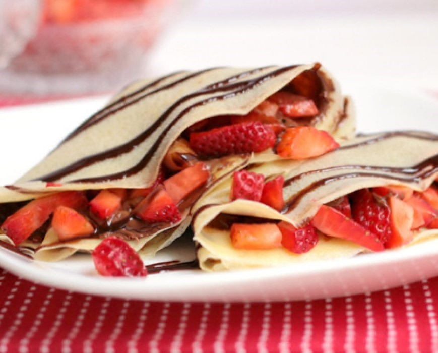

Crepas con nutella y fresas

Ingredientes
- 1 1/2 tazas de leche de vaca
- 1 taza de harina
- 2 huevos
- 1 cucharada de aceite
- 1/4 cucharaditas de sal
- 2 cucharaditas de azúcar
- nutella
- fresas, partidas
- pistaches, picado, para decorar
Cómo hacer Crepas con nutella y fresas:
- Se calienta un sarten redondo pequeño con unas gotitas de aceite (se puede distribuir por el sartén con una servilleta para que no quede grasoso).
- Con una cuchara honda se sirve un poco de la mezcla en el sartén, asegurando que cubra todo el sartén y se deja cocinar unos 45 segundos hasta que este doradita por abajo.
- Se repite lo mismo hasta hacer todas las crepas. Se acomodan en un platón engrasado doblandolas en cuatro.
- Se pone la nutella y las fresas en las crepas.
- Decora con pistache.